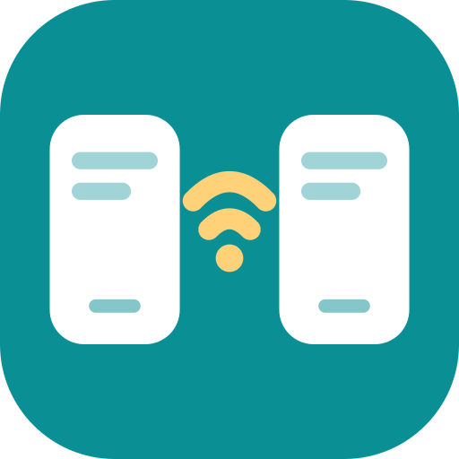
חיברתי
מטלפון לטלפון, בלי אינטרנטמחברים שני טלפוני אנדרואיד ישירות ב-Wi-Fi, בלי אינטרנט, בלי ראוטר ובלי שרת. משתפים את המסך עם הקול, שולחים קבצים ותמונות באיכות המקורית (גם סרטונים של כמה ג'יגה), ושולחים הודעות להעתקה. אפשר גם לשלוט במכשיר השני. גם מחשב מתחבר: תוכנה ל-Windows או מהדפדפן. הכל מוצפן, ושום דבר לא קורה בלי אישור.
הורד 49 פעמים כל המספרים
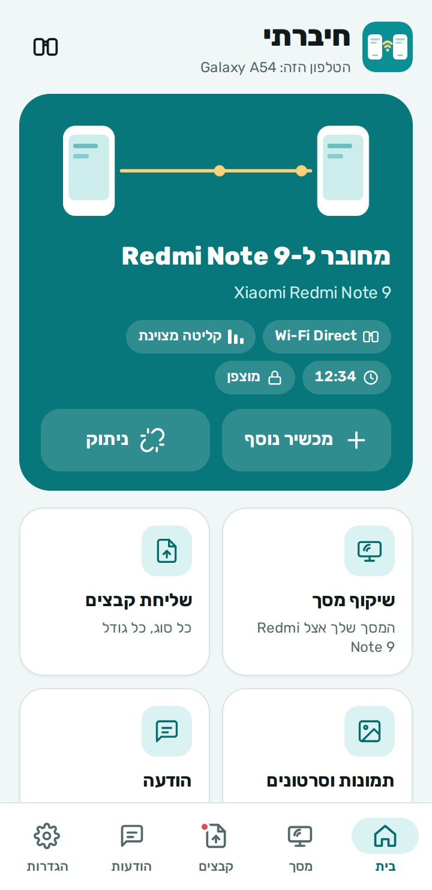
מה חדש
גרסה 2.2- תוכנת המחשב: המחשב מחובר לאינטרנט ב-Wi-Fi? אין צורך להתנתק. כפתור חדש "נקודה חמה מהמחשב", והטלפון מתחבר אליה
- הנקודה החמה מראה קוד Wi-Fi קטן לסריקה במצלמה של הטלפון, וגם את השם והסיסמה
- או פשוט מחברים את הטלפון לאותו Wi-Fi של המחשב, והתוכנה מוצאת אותו לבד
עובד לגמרי בלי אינטרנט
- החיבור, שיקוף המסך, הקבצים וההודעות עוברים ישירות בין שני הטלפונים, גם במצב טיסה עם Wi-Fi דלוק, ובמקום בלי קליטה בכלל.
- לא צריך ראוטר: אחד הטלפונים יוצר רשת Wi-Fi ישירה (Wi-Fi Direct) והשני מתחבר אליה. אם במכשיר אין Wi-Fi Direct, אפשר להתחבר דרך Wi-Fi משותף, גם בלי אינטרנט.
- שום דבר לא עולה לענן ולא עובר דרך שרת, גם לא אצל המפתח.
- שליחת האפליקציה עצמה לחבר עובדת בלי אינטרנט.
צריך אינטרנט רק כדי להוריד עדכון ולשלוח פנייה למפתח. פנייה שנכתבה בלי אינטרנט נשלחת לבד כשהחיבור חוזר.
התקנה
- מורידים
לוחצים "הורדה לאנדרואיד" למעלה. הקובץ chibarti.apk יורד לטלפון. אפשר גם לקבל אותו מחבר בבלוטות' או ישר מחיברתי שלו, בלי אינטרנט.
- מתקינים בשני הטלפונים
פותחים את הקובץ ומאשרים "התקנה ממקור לא ידוע". צריך את חיברתי בשני הטלפונים.
- מתחברים
בטלפון אחד: "התחלת חיבור". בשני: "סריקת קוד". מאשרים, וזהו. איך זה נראה
אם מופיעה אזהרה של Google Play Protect על אפליקציה לא מוכרת, בוחרים להתקין בכל זאת. זה קורה בכל אפליקציה שלא הורדה מחנות Google Play. את העדכונים הבאים לא צריך להוריד: הם נכנסים מתוך האפליקציה.
התחלת חיבור
בטלפון אחד לוחצים "התחלת חיבור". הטלפון יוצר רשת ישירה ומציג קוד QR וקוד של 6 ספרות.
- הקודמכיל רק סוד חד-פעמי ופרטי הרשת הזמנית. הוא מתחלף כל 10 דקות, אחרי כל חיבור, ואחרי 5 ניסיונות שגויים.
- 6 הספרותלטלפון בלי מצלמה (או כשהמצלמה לא קוראת): מקלידים אותן בטלפון השני.
- סוג החיבורWi-Fi Direct כשאפשר. אם לא, נקודה חמה מקומית, או ה-Wi-Fi שהטלפון כבר מחובר אליו. כתוב מתחת לקוד.
- ביטולחזרה למסך הראשי מפסיקה להציע חיבור.
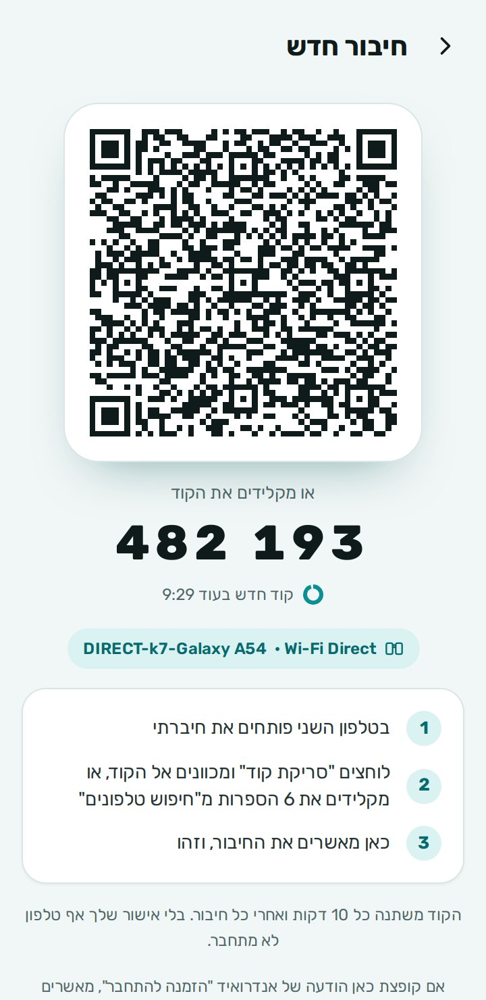
הטלפון השני מתחבר
בטלפון השני לוחצים "סריקת קוד" ומכוונים את המצלמה אל הקוד. החיבור עובר לבד לרשת של הטלפון הראשון.
- סריקת קודהמצלמה קוראת את הקוד בתוך הטלפון. שום תמונה לא נשמרת ולא נשלחת.
- חיפוש טלפונים בסביבהבלי מצלמה: רשימה של טלפונים קרובים שמציעים חיבור. בוחרים, ומקלידים את 6 הספרות. החיבור עובר לרשת של הטלפון הראשון בדיוק כמו בסריקה. אם בטלפון הראשון בכל זאת קופצת הודעה של אנדרואיד "הזמנה להתחבר", מאשרים אותה.
- מכשיר מוכרטלפון שכבר אושר פעם מתחבר בלי קוד ובלי אישור: במסך הראשי, ב"מכשירים מוכרים", לוחצים "התחברות", ובטלפון השני "התחלת חיבור". הוא נמצא ומתחבר לבד.
- מצלמה רגילהגם המצלמה של הטלפון יודעת לסרוק את הקוד: הקישור פותח את חיברתי ומתחבר.
אנדרואיד 10 ומעלה עשוי לשאול "להתחבר לרשת של המכשיר?" בפעם הראשונה. מאשרים. באנדרואיד 6 עד 12 צריך שהמיקום יהיה דלוק לחיבור Wi-Fi ישיר. חיברתי לא משתמשת במיקום.
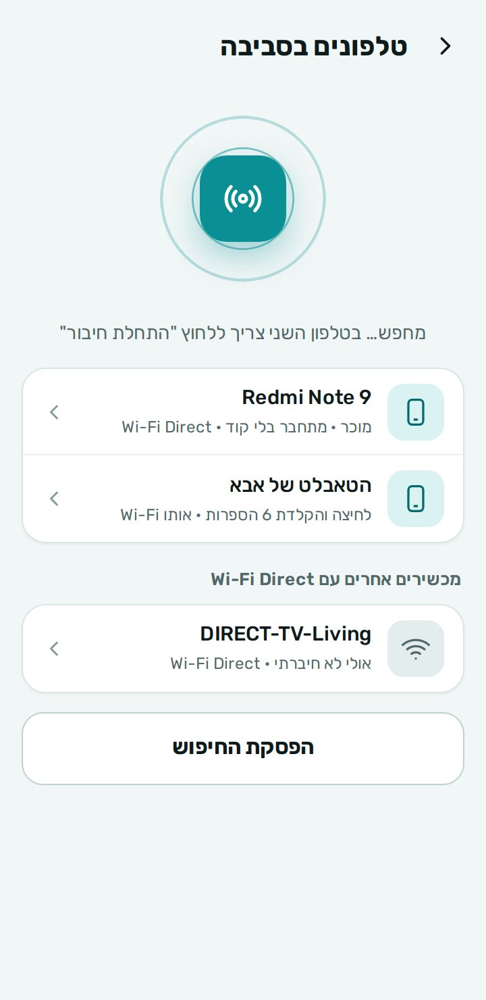
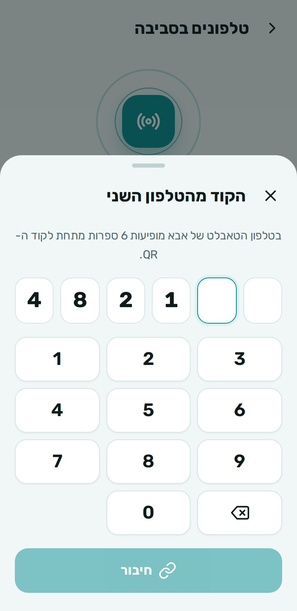
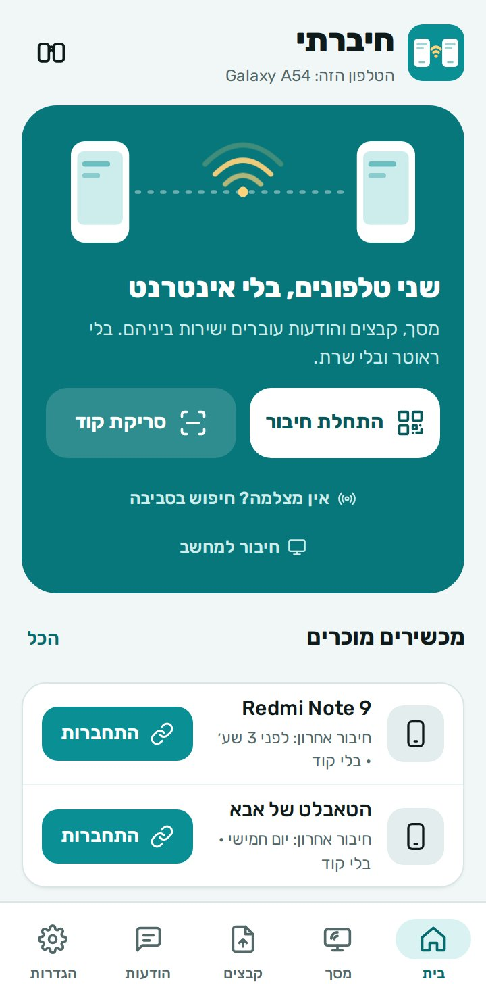
אישור החיבור
כשהטלפון השני מתחבר, בטלפון הראשון קופצת בקשה עם שם הטלפון. בלי "אישור" אין חיבור.
- אישורמחבר את שני הטלפונים. מהרגע הזה הם מחוברים בחיבור מוצפן.
- לזכור את הטלפון הזהבפעם הבאה הוא יתחבר בלי קוד ובלי אישור. אפשר לבטל ב"מכשירים מוכרים".
- דחייההטלפון השני לא מתחבר. גם אם לא עונים תוך דקה, החיבור נדחה.
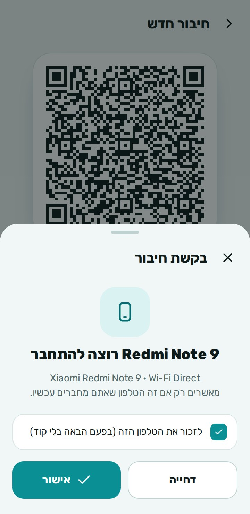
מחוברים
המסך הראשי מראה עם מי מחוברים, איך, ומה עובר ביניכם עכשיו.
- הכרטיסשם הטלפון השני, סוג החיבור (Wi-Fi Direct, אותו Wi-Fi או נקודה חמה), עוצמת הקליטה, כמה זמן מחוברים, ו"מוצפן".
- מכשירים מוכריםכשלא מחוברים: הטלפונים שאושרו פעם, עם "התחברות" בלחיצה, בלי קוד.
- ארבעה קיצוריםשיקוף מסך, שליחת קבצים, תמונות וסרטונים, והודעה.
- העברות עכשיוקבצים שנשלחים או מתקבלים, עם אחוזים, מהירות וזמן שנשאר.
- ניתוקמנתק את שני הטלפונים. גם מההתראה של אנדרואיד אפשר לנתק.
- נקטע לרגע?אם הטלפונים התרחקו או ה-Wi-Fi קפץ, החיבור חוזר לבד, וקבצים ממשיכים מאותה נקודה.
שיקוף מסך
המסך של טלפון אחד מופיע על השני, בזמן אמת, עם הקול. בוחרים איכות ולוחצים "התחלת שיתוף". אנדרואיד שואל פעם אחת, ואז הטלפון השני מאשר. בחדר של כמה מכשירים אפשר לשתף לכל החדר.
- איכותחסכונית (480p), רגילה (720p), חדה (1080p) או מקסימום (1080p ב-60 תמונות בשנייה, כשהטלפון יכול). טלפון ישן שלא יכול, יורד לבד לאיכות שמתאימה לו.
- גם הקולהקול של סרטונים, משחקים ומוזיקה (מאנדרואיד 10). שיחות ואפליקציות שאוסרות הקלטה (כמו חלק מאפליקציות הסטרימינג) נשארות שקטות: אנדרואיד לא מאפשר אחרת.
- איכות אוטומטיתכשהחיבור נחלש, החדות יורדת מיד והתמונה נשארת חיה. כשהחיבור חוזר, היא עולה לאט בחזרה.
- בזמן השיתוףרואים חדות, תמונות בשנייה ומהירות. אפשר לצאת מחיברתי ולהשתמש בטלפון כרגיל.
- עצירת השיתוףמכאן, מההתראה, או מהטלפון השני.
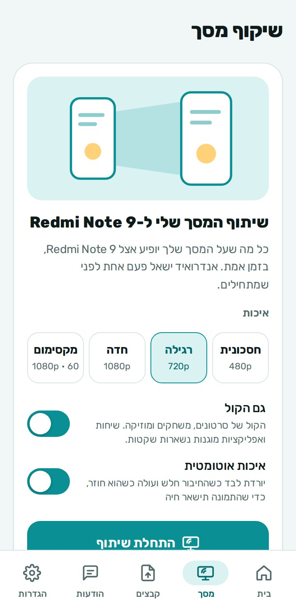
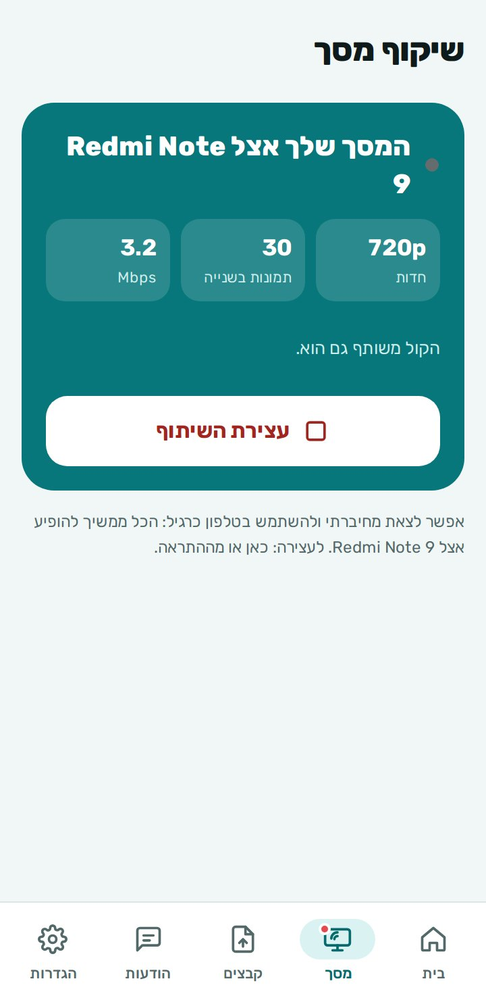
צפייה במסך של הטלפון השני
כשהטלפון השני משתף, קופצת בקשה "רוצה להראות לך את המסך שלו". לוחצים "צפייה", והמסך שלו נפתח כאן במסך מלא.
- הצורה של המסךהתמונה נשארת בצורה שלה, לאורך או לרוחב, ומתהפכת כשהטלפון השני מסתובב.
- לחיצה על המסךמראה פס עם השם, החדות, תמונות בשנייה וההשהיה, כפתור סיבוב וכפתור סגירה. הפס נעלם לבד.
- סגירה או "חזור"מפסיקים לצפות, והשיתוף נעצר גם בטלפון השני.
- החיבור נקטעכתוב "מתחבר שוב…", והתמונה חוזרת לבד.
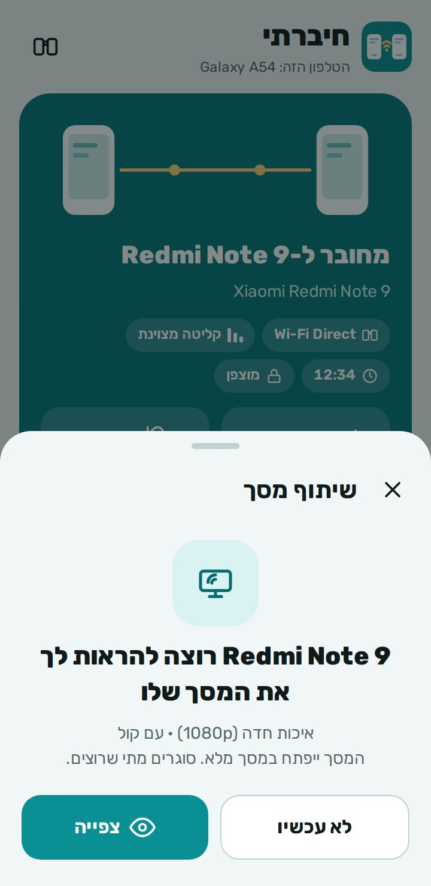
שליחת קבצים
כל קובץ, בכל גודל: מסמכים, PDF, Office, ZIP, APK, מוזיקה, וגם סרטונים של כמה ג'יגה. הקבצים עוברים בחתיכות קטנות, כך שגם טלפון ישן עם מעט זיכרון שולח קבצים ענקיים.
- בחירת קבציםבוחר המסמכים של אנדרואיד. אפשר כמה קבצים בבת אחת.
- תמונות וסרטוניםבוחרים, ורואים לפני ששולחים. לחיצה מסמנת או מורידה סימון. לחיצה ארוכה פותחת תצוגה גדולה. חיברתי לא מקבלת גישה לכל הגלריה, רק למה שבחרתם.
- בזמן השליחהפס התקדמות בשני הטלפונים, גם בזה ששולח: אחוזים, כמה עבר, מהירות וזמן שנשאר. אפשר להשהות, להמשיך או לבטל.
- בדיקהכל קובץ נבדק בצד השני (SHA-256). קובץ שהגיע פגום נמחק ולא נשמר.
- קבצי APKנשלחים כמו כל קובץ, ונשמרים בהורדות. הם אף פעם לא מותקנים לבד.
באמצע שליחה החיבור נקטע? כשהוא חוזר, השליחה ממשיכה מאותה נקודה, לא מההתחלה.
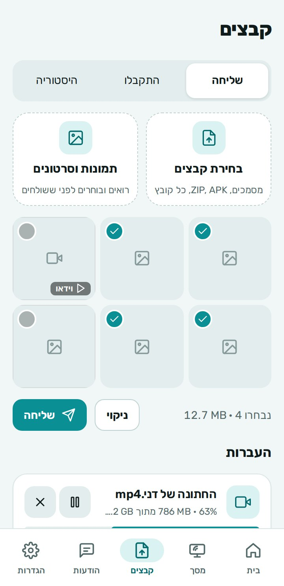
קבלת קבצים
כשהטלפון השני שולח, קופצת בקשה עם רשימת הקבצים והגודל. רק אחרי "קבלה" משהו נשמר.
- קבלהבודק שיש מספיק מקום, ומתחיל. בבקשה כתוב גם איפה הקבצים יישמרו, עם "שינוי" בלחיצה.
- לא עכשיושום דבר לא נשמר.
- שם שכבר קייםהקובץ נשמר בשם חדש, למשל "תמונה (1).jpg". שום קובץ לא נדרס.
- התקבלוכל הקבצים שהגיעו, עם פתיחה ושיתוף בלחיצה.
- היסטוריהכל מה שנשלח והתקבל, לפי ימים, עם סינון. ניקוי ההיסטוריה לא מוחק את הקבצים.
- איפה לשמורשלוש אפשרויות: לפי סוג (תמונות ב-Pictures/Chibarti, סרטונים ב-Movies/Chibarti, מוזיקה ב-Music/Chibarti והשאר ב-Download/Chibarti), הכל יחד ב-Download/Chibarti, או תיקייה שבוחרים, גם בכרטיס זיכרון. משנים בהגדרות, ב"התקבלו" או ישר מהבקשה.
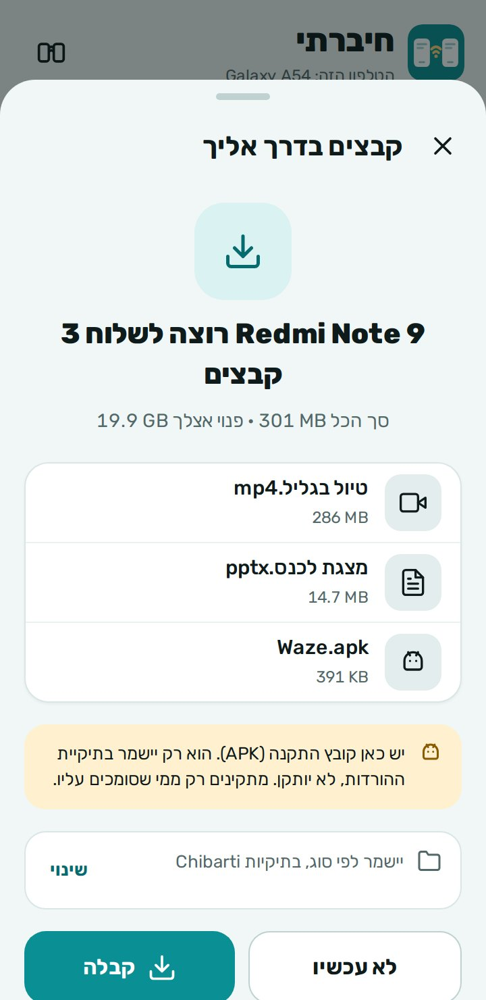
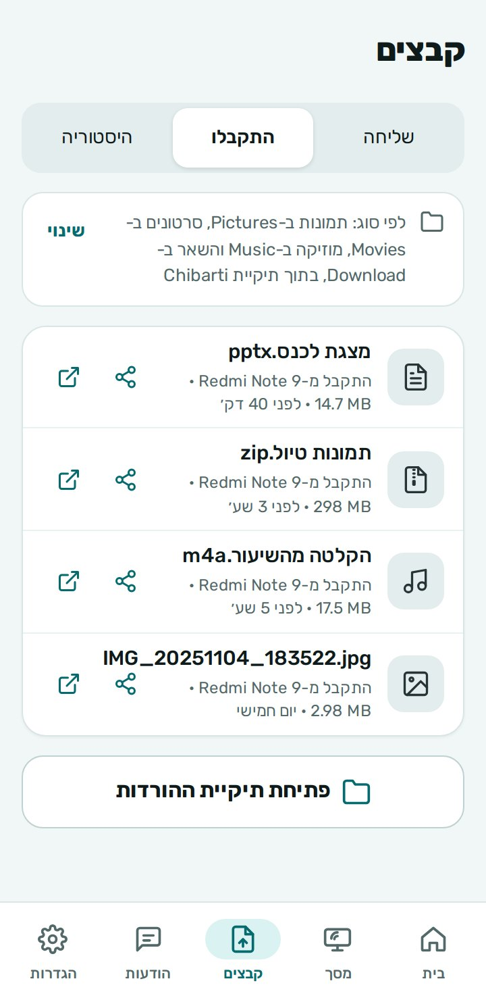
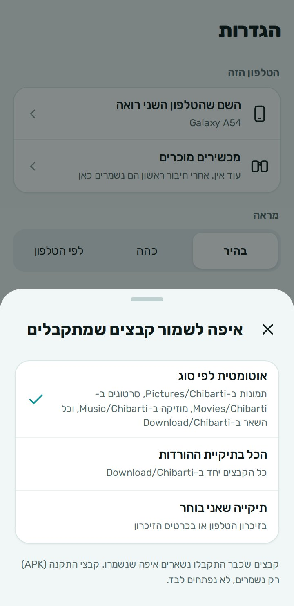
הודעות
שולחים טקסט ישר לטלפון השני: סיסמה ל-Wi-Fi, כתובת, קישור או מספר. בצד השני לוחצים "העתקה" והוא בלוח.
- הדבקהמכניס את מה שבלוח לתיבה. חיברתי קוראת את הלוח רק כשלוחצים על זה, אף פעם לא ברקע.
- העתקהעל כל הודעה. מעתיק אותה ללוח של הטלפון.
- תגובה עם ציטוטגוררים הודעה שמאלה (או לוחצים "תגובה"), ומעל שורת ההקלדה מופיע "בתגובה ל…". ההודעה נשלחת עם ציטוט, ולחיצה על הציטוט קופצת להודעה המקורית. גם במחשב: ↩ ליד ההודעה.
- שורת ההקלדהמתרוקנת מיד אחרי השליחה, והמקלדת נשארת פתוחה להודעה הבאה.
- קישוריםקישור בהודעה נפתח בלחיצה.
- ניקוימוחק את ההודעות מהטלפון הזה.
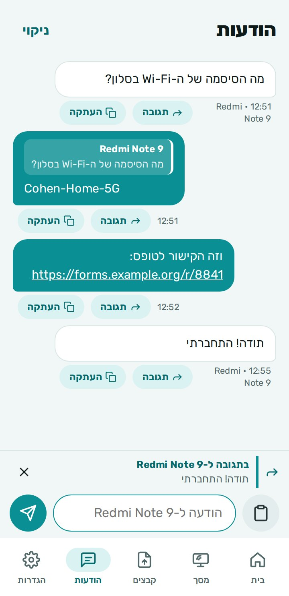
חדר של כמה מכשירים
לא רק שניים: עד 8 מכשירים מתחברים לטלפון אחד, בלי אינטרנט. הודעות עוברות לכולם, וקבצים לכולם או למכשיר אחד. כל מכשיר חדש מאשרים פעם אחת, ומכשיר מוכר נכנס בלי קוד.
- פתיחת חדרמחברים מכשיר אחד כרגיל. במסך הראשי לוחצים מכשיר נוסף: מופיעים קוד וקוד QR חדשים, והמכשיר הבא מצטרף כמו בחיבור רגיל. החיבור של מי שכבר מחובר לא נקטע.
- מי בחדרבמסך הראשי מופיעים שמות כל המכשירים. לחיצה עליהם פותחת את דף החדר: מי מחובר, מי הראשי, ובטלפון שפתח את החדר גם הוצאה של מכשיר.
- הודעות לכולםכל הודעה מגיעה לכל המכשירים, עם שם מי שכתב. אפשר גם להגיב עם ציטוט.
- קבציםבשליחה שואלים למי לשלוח?: לכולם, או למכשיר אחד. כל מכשיר מאשר לבד. בין שני מכשירים שהצטרפו, הקבצים עוברים דרך הטלפון שפתח את החדר.
- מסך לכולםבלשונית "מסך": שיתוף לכל החדר. כל מכשיר מקבל בקשה ומאשר לבד, ומי שאישר רואה את המסך עם הקול. כל מכשיר בחדר יכול לשתף לכולם: כשמשתף מכשיר שהצטרף, המסך עובר דרך הטלפון שפתח את החדר.
- טלפון איטימכשיר שלא עומד בקצב מדלג קדימה ורואה תמיד את "עכשיו", בלי לעכב את האחרים. האיכות יורדת לבד לפי המכשיר החלש.
- רק לאחדרק ל-… משתף למכשיר הראשי בלבד, כמו בין שני טלפונים. שליטה מרחוק אפשרית רק כך, לא במסך ששותף לכל החדר. הטלפון שפתח את החדר בוחר מי הראשי ("לראשי").
- סגירהסגירת החדר מנתקת את כולם. במכשיר שהצטרף: יציאה מהחדר.
כמה מכשירים? עד 7 מכשירים מחוברים לטלפון אחד, כלומר 8 בחדר. הודעות וקבצים עוברים טוב גם בחדר מלא. שיתוף מסך לכולם ב-Wi-Fi Direct עובד הכי טוב עד 3–4 צופים. ביותר צופים כדאי איכות רגילה או חסכונית.
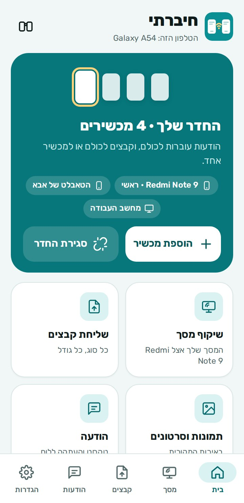
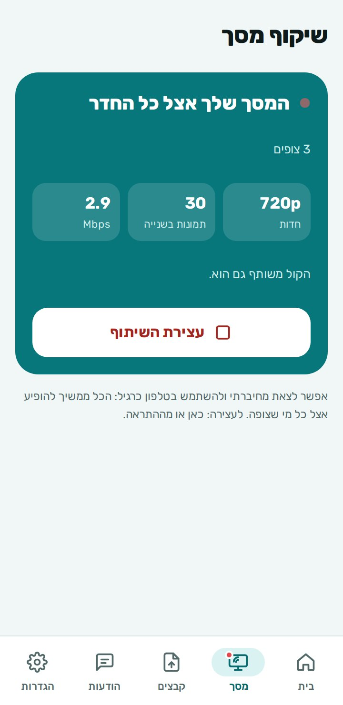
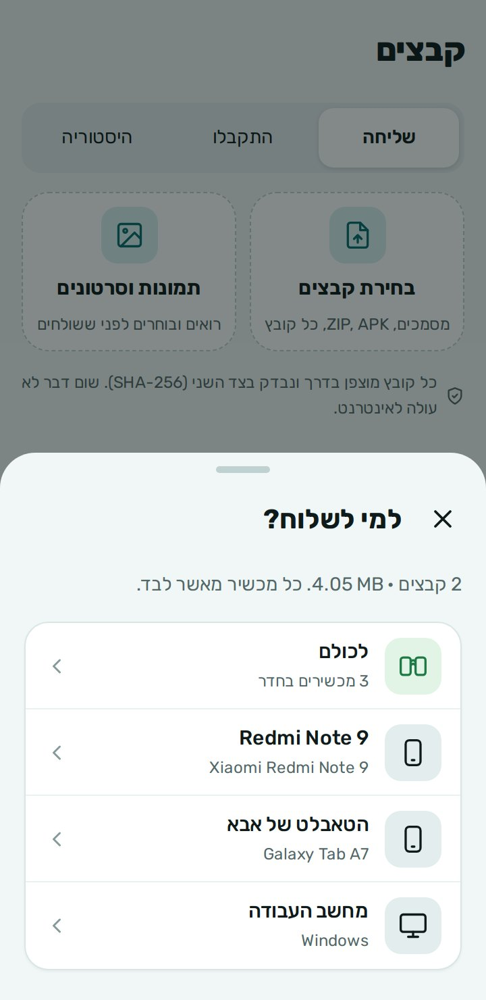
חיבור למחשב
גם מחשב מתחבר לטלפון, בלי אינטרנט. הכי פשוט עם תוכנת חיברתי ל-Windows: סורקים פעם אחת את הקוד שעל המסך, ומאז הם מתחברים לבד. בלי תוכנה, אפשר גם מהדפדפן.
הורדה ל-Windowsקובץ אחד, בלי התקנה · Windows 10 ו-11
- 1. פותחיםאת chibarti-pc.exe. בפעם הראשונה Windows שואל: "מידע נוסף" ואז "הפעל בכל זאת" (התוכנה בחינם ולא חתומה בתשלום).
- 2. סורקיםבטלפון: חיבור למחשב ← יש לך את תוכנת חיברתי במחשב? ← סורקים את הקוד שבתוכנה. זה האישור, ואין קוד להקליד.
- מאזפותחים את התוכנה, ובטלפון את חיברתי: על אותו Wi-Fi הם מתחברים לבד. בלי Wi-Fi בסביבה מחברים את המחשב לרשת של הטלפון (השם והסיסמה מופיעים בטלפון).
- אינטרנט ב-Wi-Fiהמחשב מחובר לאינטרנט ב-Wi-Fi ולא רוצים לנתק אותו? מחברים את הטלפון לאותו Wi-Fi, או בתוכנה: נקודה חמה מהמחשב. המחשב משתף רשת קטנה משלו (בלי להתנתק מהאינטרנט), סורקים את הקוד הקטן במצלמה של הטלפון או מקלידים את השם והסיסמה, ואז בחיברתי "חיבור למחשב". עובד ב-Windows 10 ו-11 עם נקודה חמה ניידת.
- מה אפשרקבצים בשני הכיוונים (גוררים לחלון, בכל גודל), המסך של הטלפון בחלון גדול, המסך של המחשב בטלפון עם הקול, הודעות וקישורים, ושליטה מרחוק.
- בדפדפןבלי התוכנה: בטלפון "חיבור למחשב", ובדפדפן (Chrome או Edge) כותבים את הכתובת שמופיעה בטלפון, למשל 192.168.49.1:8080. בפעם הראשונה הדפדפן מזהיר שהחיבור "אינו פרטי": "מתקדם" ואז "המשך". מקלידים את 6 הספרות ומאשרים בטלפון.
- קולהקול של המחשב עובר לכל טלפון. קול מהטלפון למחשב עובר מאנדרואיד 10.
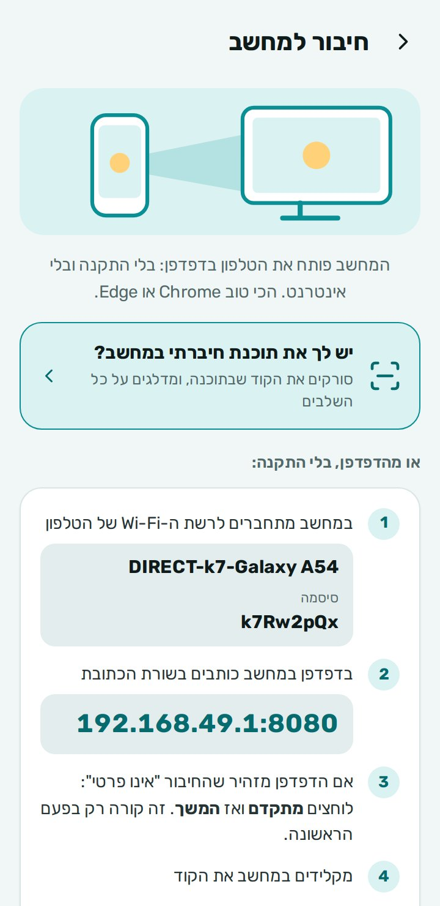
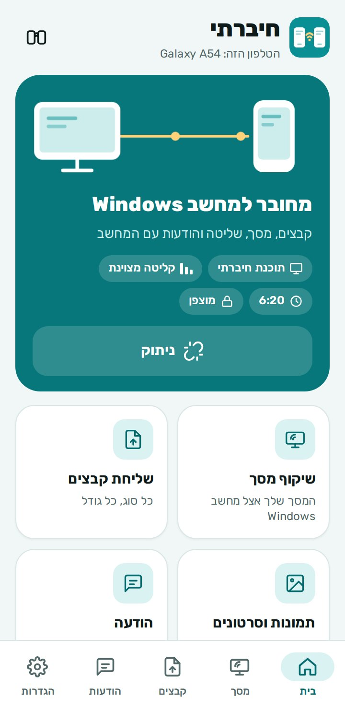
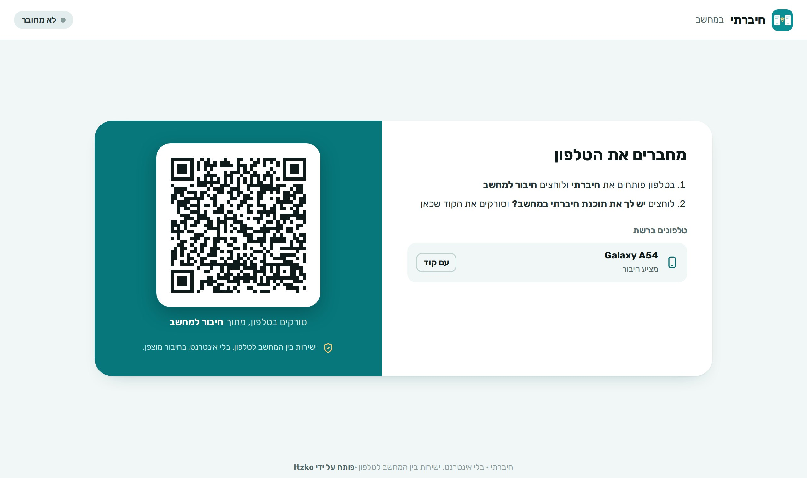
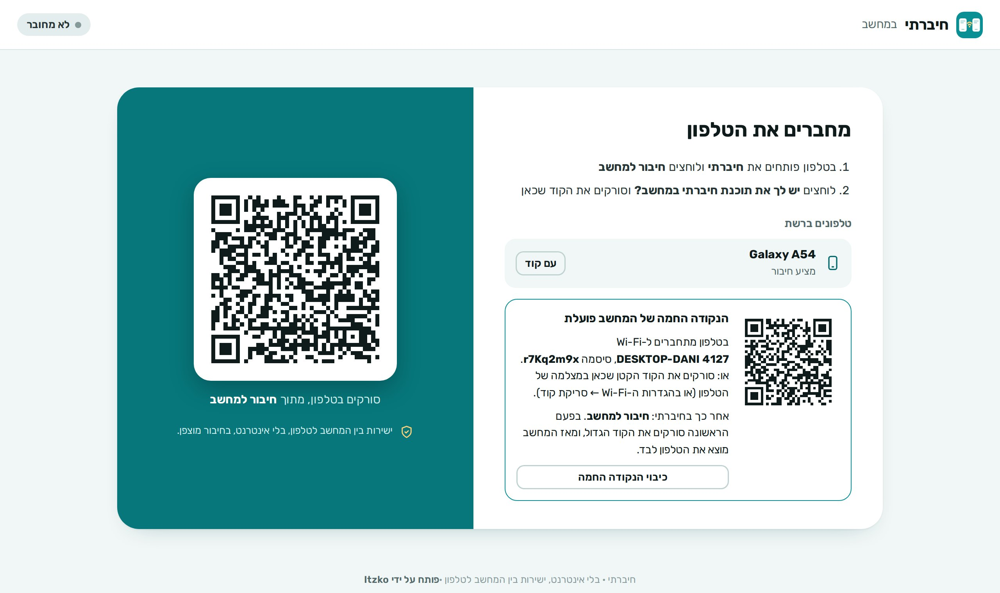
שליטה מרחוק
כשרואים את המסך של המכשיר השני, אפשר גם ללחוץ עליו. לוחצים שליטה, ובמכשיר שנשלט מאשרים.
התוסף לשליטהרק לטלפון שרוצים לשלוט בו
- טלפון מהמחשבלחיצה בעכבר היא נגיעה, החזקה היא לחיצה ארוכה, גרירה היא החלקה, הגלגלת גוללת וקליק ימני הוא "חזרה". מה שמקלידים במקלדת נכתב בטלפון. יש גם כפתורים לחזרה, למסך הבית, לאפליקציות האחרונות ולהתראות.
- טלפון מטלפוןנוגעים בתמונה של המסך. למטה יש חזרה, בית, אחרונות ומקלדת שכותבת בטלפון השני.
- מחשב מטלפוןמתוכנת חיברתי ל-Windows: משתפים את כל המסך, והטלפון מזיז את העכבר, לוחץ ומקליד. מהדפדפן זה לא אפשרי.
- פעם אחתבטלפון שנשלט מוסיפים את התוסף הקטן חיברתי – שליטה. זו הדרך היחידה שאנדרואיד מאפשר ללחוץ על המסך. כשמבקשים שליטה בפעם הראשונה, חיברתי פותחת מדריך עם כפתור לכל שלב, ומסמנת כל שלב שהושלם. צריך אנדרואיד 7 ומעלה.
- 1. Play ProtectPlay Protect חוסם כל אפליקציה שיכולה ללחוץ על המסך, ולכן השליטה בתוסף נפרד, והאפליקציה עצמה מותקנת ומתעדכנת כרגיל. כדי להתקין את התוסף: בכפתור "פתיחת Play Protect" לוחצים על ⚙ למעלה ומכבים לרגע את "סריקת אפליקציות".
- 2. התקנה"הורדת התוסף", פותחים את הקובץ ומתקינים.
- 3. להחזיר את הסריקהמיד כשהתוסף מותקן קופצת תזכורת: "פתיחת Play Protect", מדליקים שוב את "סריקת אפליקציות", ולוחצים "הדלקתי". התוסף ממשיך לעבוד.
- 4. הגדרות מוגבלותבאנדרואיד 13 ומעלה: "הדף של התוסף" ← ⋮ למעלה ← "התרת הגדרות מוגבלות", ומאשרים בטביעת אצבע או בקוד. בלי זה המתג בנגישות אפור. באנדרואיד 15 האפשרות מופיעה אחרי ניסיון אחד להפעיל בנגישות.
- 5. נגישות"הגדרות הנגישות" ← חיברתי – שליטה (לפעמים בתוך "אפליקציות שהורדו") ← הפעלה. בשיאומי כפתור האישור נפתח אחרי כמה שניות.
- בטוחשום דבר לא קורה בלי אישור באותו רגע, במכשיר שנשלט. השליטה נגמרת עם סוף שיתוף המסך, ואפשר לעצור אותה בכל רגע מההתראה או מהמסך.
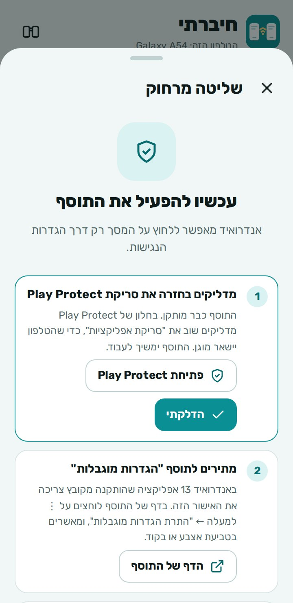
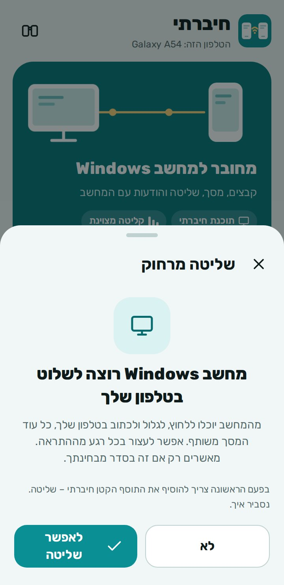
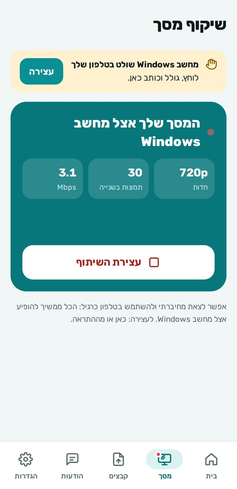
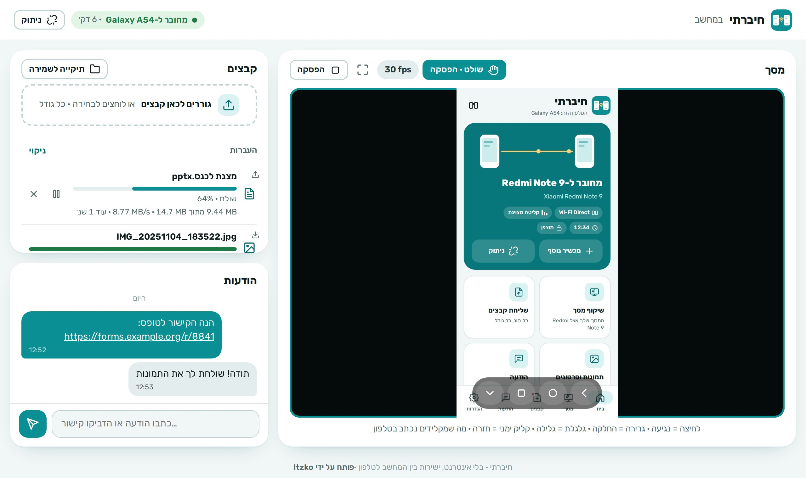
הגדרות
- השם שהטלפון השני רואהכך הטלפון הזה מופיע ברשימה ובבקשת החיבור.
- מכשירים מוכריםטלפונים ומחשבים שאושרו ונזכרו, מתי היה חיבור אחרון, "התחברות" בלי קוד, והפח שמוחק את המפתח שלהם.
- מראהבהיר, כהה, או לפי הטלפון.
- שיקוף מסךאיכות, קול, איכות אוטומטית.
- איפה לשמורלפי סוג, הכל בתיקיית ההורדות, או תיקייה שבוחרים.
- חיבור והרשאותכל אישור של אנדרואיד שחיברתי צריכה, מה הוא עושה, וכפתור לאשר. חסר משהו? כתוב כאן מה.
- יומן חיבורכל שלב בכל ניסיון חיבור: הצעת החיבור, החיפוש, מציאת הטלפון השני, הכניסה לרשת והאישור. משהו לא עובד? "שליחה למפתח" שולחת את היומן עם הפנייה, וכך רואים בדיוק איפה זה נעצר. אין ביומן קודים או סיסמאות.
- חיסכון בסוללהמומלץ לא להגביל את חיברתי, כדי שהחיבור לא ייקטע כשהמסך כבוי.
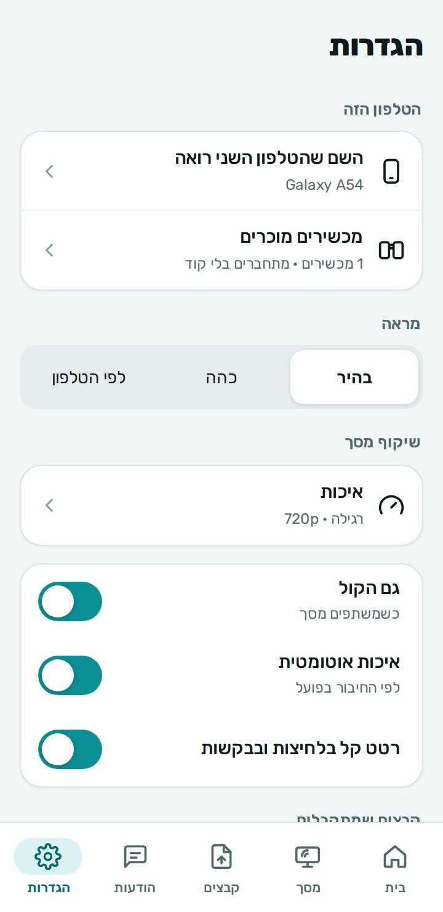
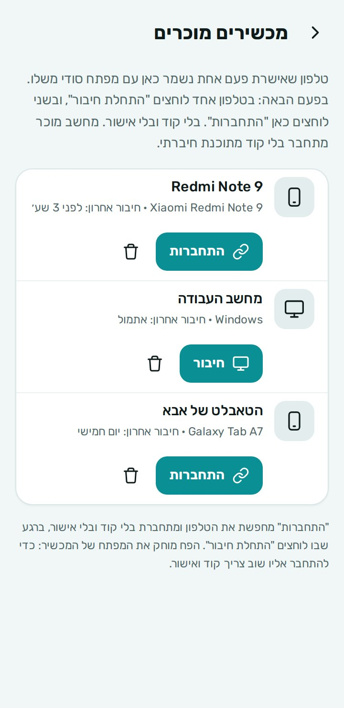
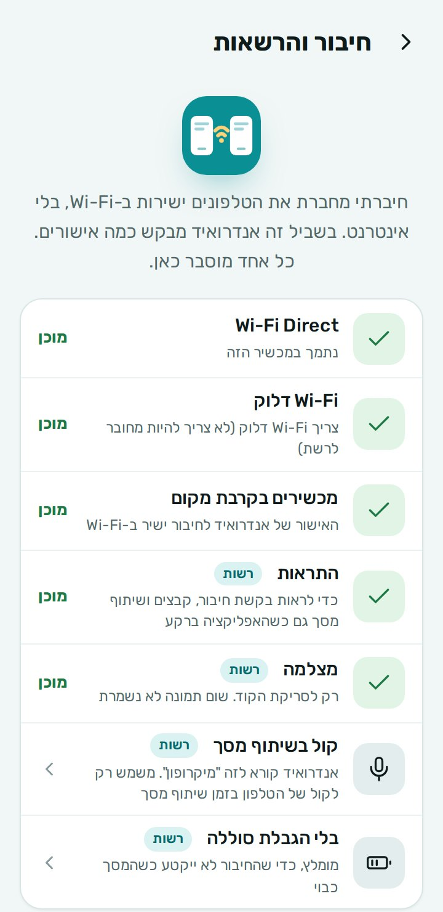
פרטיות ואבטחה
חיברתי בנויה כך ששום דבר לא יוצא מהטלפונים, ושום דבר לא קורה בלי אישור.
- ישירותבלי אינטרנט, ענן או שרת. גם המפתח לא רואה כלום.
- מוצפןכל חיבור מקבל מפתחות חדשים (ECDH P-256) וכל מה שעובר מוצפן ב-AES-256-GCM. הודעה ששונתה בדרך נדחית.
- קודים חד-פעמייםקוד ה-QR ו-6 הספרות טובים לחיבור אחד ול-10 דקות לכל היותר. אין בהם סיסמה קבועה.
- באישור בלבדחיבור חדש, קבלת קבצים, וצפייה במסך, כל אחד צריך אישור.
- מה נשמר בטלפוןהיסטוריית ההעברות, ההודעות, והמכשירים שבחרתם לזכור. אפשר למחוק הכל.
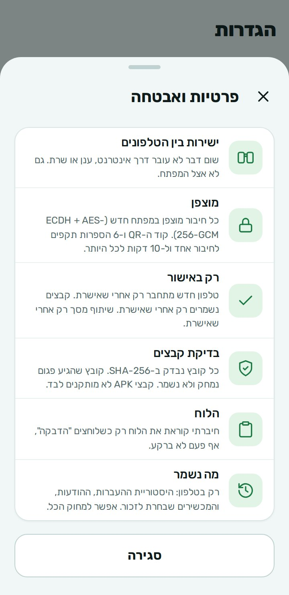
טלפונים ישנים, ובלי Wi-Fi Direct
חיברתי עובדת מאנדרואיד 6 (2015) ומעלה, ומתאימה את עצמה לכל טלפון.
- אנדרואיד 6 עד 9מתחבר לרשת של הטלפון השני לבד, בלי לשאול, וחוזר ל-Wi-Fi הרגיל אחרי הניתוק. מבקש אישור לשמור קבצים בתיקיית ההורדות.
- בלי Wi-Fi Directאם הטלפון לא תומך, או שזה לא עבד, חיברתי מנסה נקודה חמה מקומית, ואחר כך Wi-Fi משותף (ראוטר או נקודה חמה של טלפון שלישי, גם בלי אינטרנט).
- מקודד וידאו ישןטלפון שלא מסוגל ל-1080p או ל-60 תמונות בשנייה יורד לבד לאיכות שהוא כן יכול.
- קולשיתוף קול אפשרי מאנדרואיד 10. בטלפון ישן יותר המסך משותף בלי קול.
עדכונים
כשיש אינטרנט ויוצאת גרסה חדשה, בפתיחת האפליקציה קופץ חלון "גרסה חדשה" עם רשימה של מה השתנה.
- עדכון עכשיוהעדכון נכנס בתוך האפליקציה, והיא נפתחת מחדש בגרסה החדשה. המכשירים המוכרים וההיסטוריה נשארים.
- הורדת הגרסה החדשהמופיע רק בגרסה שמשנה את החלק של אנדרואיד (החיבור, השיקוף). מתקינים אותה פעם אחת מעל הקיימת.
- אחר כךסוגר את החלון.
- בדיקת עדכוניםהגדרות ← כללי ← בדיקת עדכונים
בלי אינטרנט הכל ממשיך לעבוד כרגיל. העדכון מחכה לפעם הבאה שיהיה חיבור.
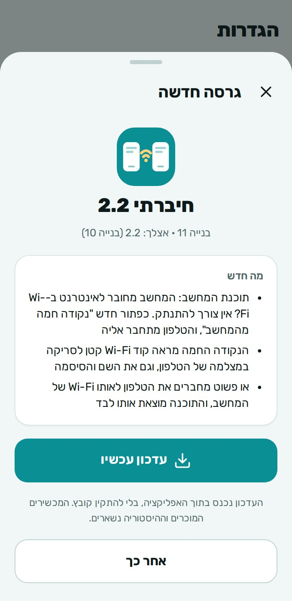
מה מבקשים מכם
להשתמש באפליקציה, ולספר מה לא עבד ומה היה עוזר.
- איפההגדרות ← פנייה / הצעת ייעול
- מה ממלאיםסוג (הצעת ייעול, תקלה או אחר), שם, מייל, ומה רציתם להגיד.
- שליחת הפנייהמגיעה ישר למפתח. בלי אינטרנט היא נשמרת ונשלחת לבד כשהחיבור חוזר.
- טיפ לתקלותכתבו אילו שני טלפונים (דגם וגרסת אנדרואיד), איך התחברתם, ומה קרה.
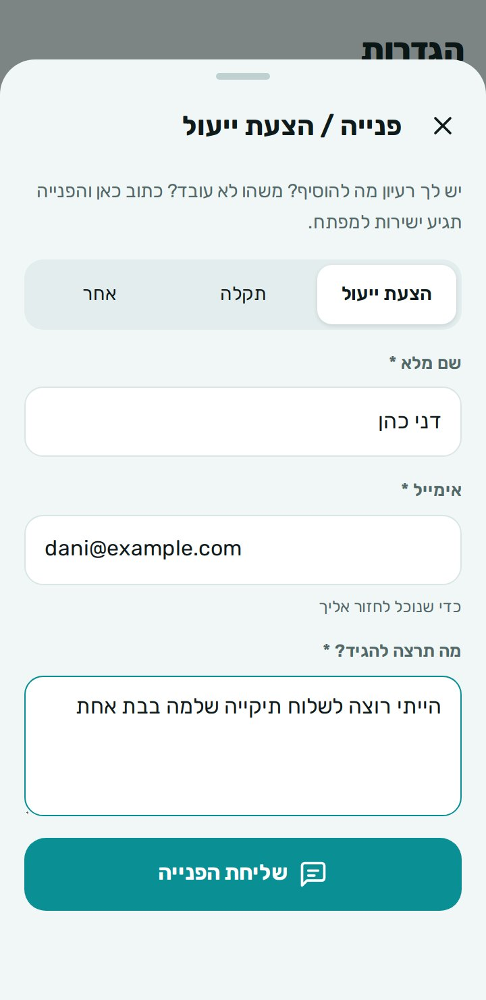
ומה עם אייפון?
חיברתי היא לאנדרואיד בלבד. באייפון, אפל לא נותנת לאפליקציה שלא מהחנות שלה (וגם לא לאתר במסך הבית) ליצור רשת Wi-Fi ישירה, לצלם את המסך ולשדר אותו, או לשמור קבצים ישר לטלפון. בלי זה אין חיבור ישיר, ולכן אין גרסה לאייפון.
פותח על ידי Itzko
חיברתי היא אפליקציה עצמאית של Itzko: בלי פרסומות, בלי הרשמה ובלי שרת. מה שעובר בין הטלפונים נשאר ביניהם. כל רעיון או תקלה מגיעים ישירות אליו דרך "פנייה / הצעת ייעול" בהגדרות של האפליקציה.